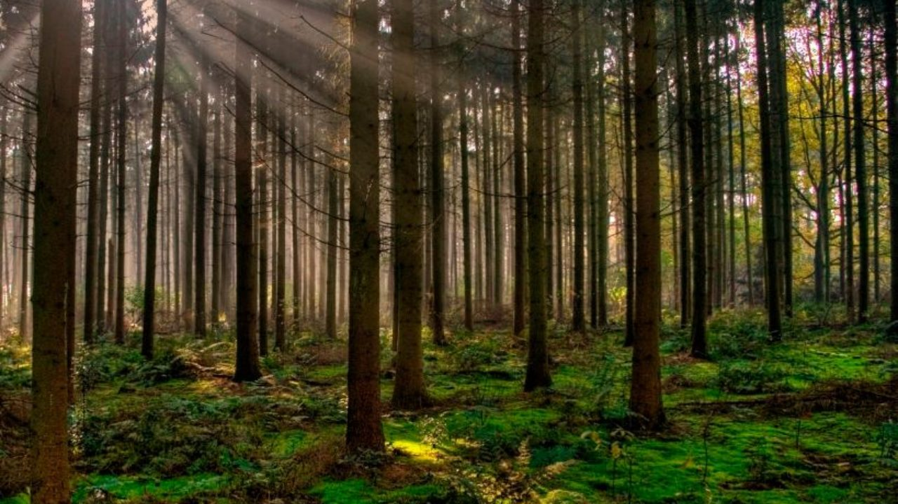
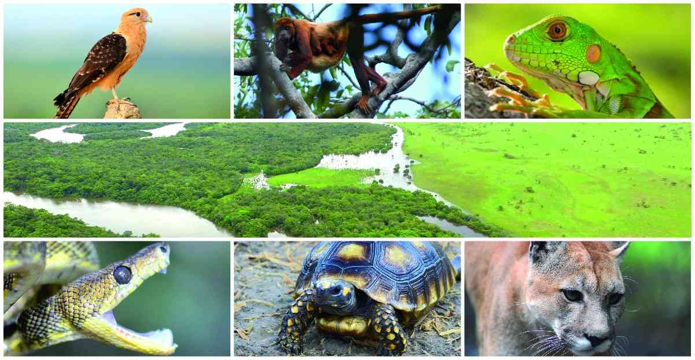

Los boques y su riqueza natural son demasiado valiosos para perderlos

Los bosques albergan el 80 % de las especies del planeta, pese a su importancia cada año perdemos una superficie de 130,000 kilómetros cuadrados en el mundo, un área similar al estado de Durango. El 21 de marzo fue declarado como el Día Internacional de los Bosques por la Asamblea General de las Naciones Unidas. Su celebración rinde un homenaje a la gran importancia de todos los tipos de bosques del planeta.
Los bosques cubren un tercio de la superficie terrestre y juegan un papel fundamental en la vida del planeta. Más de 1 000 millones de personas —incluidas más de dos mil pueblos indígenas— dependen de los bosques para sobrevivir: les proporciona alimentos, medicinas, combustible y abrigo. Pero pese a los increíbles beneficios ecológicos, económicos y sociales que nos brindan los bosques, la desforestación continúa a un ritmo sin precedentes.

Los bosques además de otorgar recursos necesarios para la sustentabilidad humana proveen beneficios al medio natural, como por ejemplo los bosques templados retienen el aguade lluvia, facilita que se infiltre al subsuelo y se recarguen los mantos acuíferos. Disminuye la erosión al reducir la velocidad del agua y sujetar la tierra y reduce el riesgo de inundaciones. Ofrece multitud de hábitats distintos para gran variedad de seres vivos. Además, provee de una variedad de productos importantes.

sin embargo, enfrentan múltiples amenazas, las principales son la tala de grandes extensiones para el desarrollo de la agricultura, industria maderera, además también se han utilizado para el pastoreo extensivo. Son afectados por incendios forestales, transformación de suelos para agricultura o ganadería, cacería de subsistencia y tráfico ilegal de especies